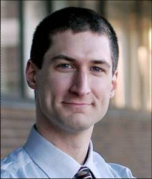
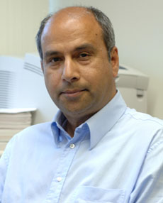

Second IEEE Workshop on
Camera Networks and Wide-Area Scene Analysis
17 June 2011
Providence, RI, USA
Co-located with CVPR 2012.
Keynote Speakers
 |
Richard RadkeAssociate Professor |
Camera Network Computer Vision: Research vs. Reality |
|
Abstract:Academic researchers have been proposing computer vision algorithms for calibration, tracking, and change detection for decades. So why do industry computer vision solutions often seem so low-tech to the academic eye? In this talk we'll discuss the challenges academic computer vision algorithms face when making the transition from the lab to the real world, with an emphasis on multi-camera surveillance applications. These challenges include the size, duration, and quality of surveillance video; vast differences between academic and commercial/industrial environments; constraints on camera cost and configuration; low tolerances for missed detections and false alarms; the lack of opportunity for site-specific training or recalibration; and forethought about the problems industry really cares about solving. We'll finish by describing some of our early experiences in transitioning our computer vision algorithms from the lab into a large airport. |
|
Bio:Richard J. Radke joined the Electrical, Computer, and Systems Engineering department at Rensselaer Polytechnic Institute in 2001, where he is now an Associate Professor. His current research interests include computer vision problems related to modeling 3D environments with visual and range imagery, designing and analyzing large camera networks, and machine learning problems for radiotherapy applications. Dr. Radke is affiliated with the NSF Engineering Research Center for Subsurface Sensing and Imaging Systems (CenSSIS), the DHS Center of Excellence on Explosives Detection, Mitigation and Response (ALERT), and Rensselaer's Experimental Media and Performing Arts Center (EMPAC). Dr. Radke is a Senior Member of the IEEE and an Associate Editor of IEEE Transactions on Image Processing. |
|
 |
Mubarak ShahAgere Chair Professor of Computer Science |
Camera Networks and Wide Area Surveillance |
|
Abstract:TBA |
|
Bio:Dr. Mubarak Shah, Agere Chair Professor of Computer Science, is the founding director of the Computer Visions Lab at UCF. His research interests include: video surveillance, visual tracking, human activity recognition, visual analysis of crowded scenes, video registration, UAV video analysis, etc. Dr. Shah is a fellow of IEEE, AAAS, IAPR and SPIE. In 2006, he was awarded a Pegasus Professor award, the highest award at UCF. He is ACM distinguished speaker. He was an IEEE Distinguished Visitor speaker for 1997-2000 and received IEEE Outstanding Engineering Educator Award in 1997. He received the Harris Corporation's Engineering Achievement Award in 1999, the TOKTEN awards from UNDP in 1995, 1997, and 2000; Teaching Incentive Program award in 1995 and 2003, Research Incentive Award in 2003 and 2009, Millionaires' Club awards in 2005 and 2006, University Distinguished Researcher award in 2007, honorable mention for the ICCV 2005 Where Am I? Challenge Problem, and was nominated for the best paper award in ACM Multimedia Conference in 2005. He is an editor of international book series on Video Computing; editor in chief of Machine Vision and Applications journal, and an associate editor of ACM Computing Surveys journal. He was an associate editor of the IEEE Transactions on PAMI, and a guest editor of the special issue of International Journal of Computer Vision on Video Computing. |
|